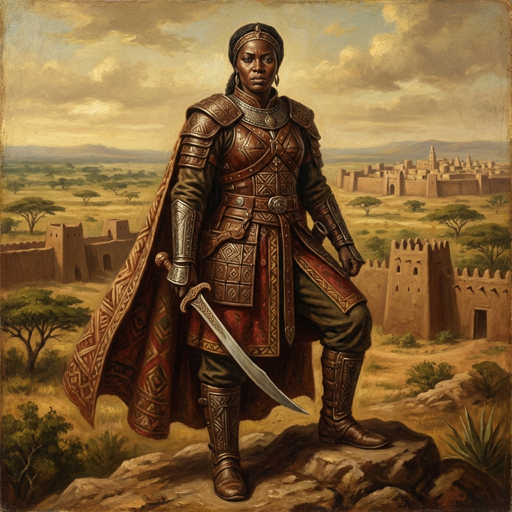

Leadership •
Africa
Queen Amina of Zazzau
Warrior Queen of Zazzau
The legendary Hausa warrior queen who expanded her kingdom through military conquest in the 16th century, known for her strategic brilliance and unprecedented influence.
Read Full Biography arrow_forward